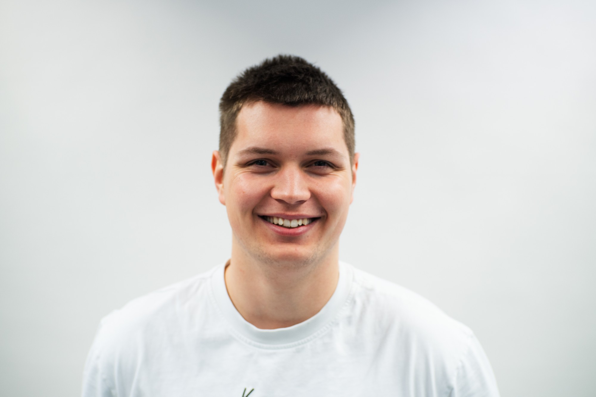

Spoluzakladatel & Business Lead
Sportera Team s.r.o.
Řídím strategii, partnerství a provoz firmy — od prvního kontaktu s partnerem po podpis smlouvy a obhajobu jejího znění. Platforma dnes pokrývá 1 100+ sportovišť ve 380+ obcích.
sportera.cz →Buduji věci od nuly a dotahuju je do stavu, kdy fungují.
Partnerství, produkt a provoz civic-tech platformy, která mapuje veřejná sportoviště po celé ČR.
01
Od 2024 vedu Sportera ↗ – platformu, která dnes mapuje přes 1 100 sportovišť ve více než 380 obcích po celé ČR.
Byl jsem součástí vyjednávání spoluprací – například s Decathlonem, Českou spořitelnou nebo při zakládání startupu na VUT – a dohlížel jsem na znění a úpravu smluv. Dál se věnuju rozšiřování okruhu partnerů a klientů.
Aktuálně jsem taky předseda a likvidátor Družstva Virtigo – vedl jsem jeho chod, teď řídím jeho řádné ukončení.

02
Spoluzakladatel & Business Lead
Řídím strategii, partnerství a provoz firmy — od prvního kontaktu s partnerem po podpis smlouvy a obhajobu jejího znění. Platforma dnes pokrývá 1 100+ sportovišť ve 380+ obcích.
sportera.cz →Předseda (12 členů) → likvidátor
Vedl jsem organizační strukturu a delegaci funkcí pro družstvo 12 lidí. Teď jako likvidátor řídím proces jeho řádného ukončení.
Ocenění a uznání
03
Organizační strukturu Virtiga i partnerství s ČS jsem stavěl dřív, než k tomu existovala formální pozice. Věřím, že aktivní práce a proaktivní přístup jsou zásadní metrikou úspěchu.
Byl jsem a nadále budu součástí všech vyjednávání, ať už se týkají Sportery nebo jiných projektů, a dokážu aktivně kontrolovat i upravovat partnerství i nároky jednotlivých stran. Věřím, že jasná komunikace je základ úspěchu.
Rozhodnutí, která nevyšla, si zpětně rozeberu – co jsem věděl a co jsem přehlédl.
Produktová rozhodnutí (onboarding, retence) stavím na metrikách, které sám navrhuju a sleduju.
04
Součástí studia byl Erasmus ve Finsku.